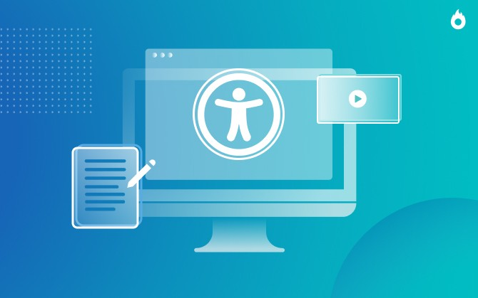

o que é?
A Acessibilidade Digital é a melhoria do design da usabilidade dos websites, através de técnicas e
ferramentas que melhorem a experiência de usuários com necessidades especiais. Assim, reduz as barreiras e
permite que pessoas com diferentes tipos de deficiência consigam acessar sozinhas websites e informações
disponíveis na internet. Sem a acessibilidade, os usuários perdem autonomia e precisam contar com a ajuda de
terceiros para executar tarefas simples e essenciais.
